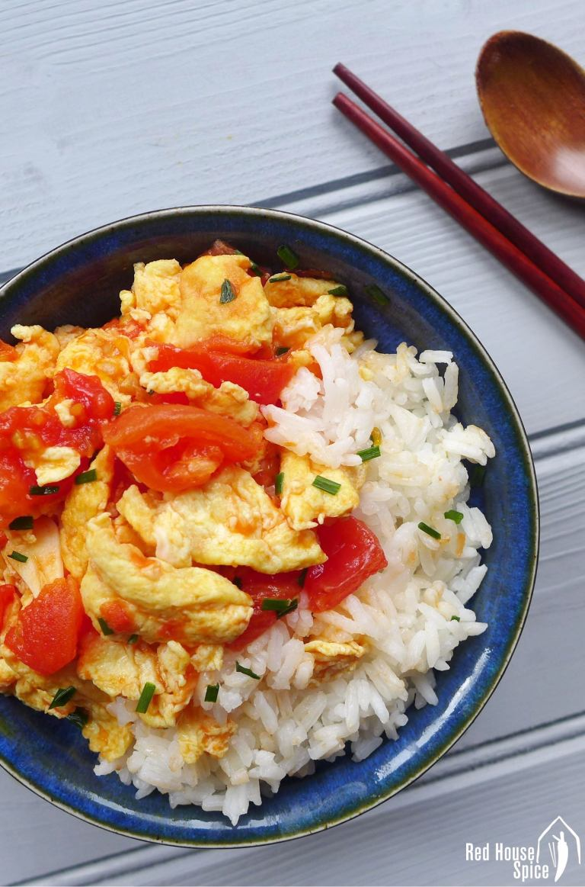

account_circle
Pasta_Lover62
{" "}
Subscribe
Egg and Tomato stir-fry
Ingredients
- 3 Eggs
- 3 Ripe tomatoes
- 1 Clove Garlic
-
step 1
Heat a wide nonstick skillet over high heat with 3 tablespoons of vegetable oil.
Whisk eggs in a bowl. Add the eggs, and cook, stirring well with a spatula or chopsticks, until just set but still runny, about 45 seconds. Pour the eggs back into the mixing bowl, and wipe out the pan. -

step 2
Chop tomatoes into 1/2 in wedges. Mince garlic then add to the owl, let. Add the chopped tomatoes to the wok and stir-fry until most of the flesh in the tomatoes has cooked down, about one minute. Reduce heat to low. -

step 3
Add the eggs back into the pan with the tomatoes, stir fry until well mixed. Serve with rice